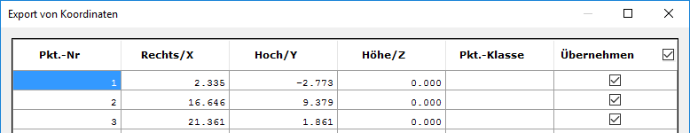

")
")
Auslagern der Koordinaten und zugehörigen Daten in eine Textdatei.
So wird's gemacht:
§Geben Sie die gewünschte Anzahl für die Nachkommastellen der Koordinaten ein. [Anzahl Nachkommastellen].
Mit Rechtsklick können Sie den Wert in der Eingabe übernehmen.
§Klicken Sie den Koordinatenursprung, eine Linie oder einen Text des entsprechenden Koordinatensystems an. [Welches Koordinatensystem exportieren].
Alle Daten, die zu diesem Koordinatensystem gehören, werden extrahiert. Danach wird folgender Dialog angezeigt.
 |
Alle vorhandenen Koordinatenangaben stehen in der Tabelle.
þ Die mit einem Haken versehenen Zeilen werden exportiert.
o Entfernen Sie den Haken, wenn einzelne Koordinaten nicht mit übernommen werden sollen.
OK
Drücken Sie diese Schaltfläche, wenn die Zusammenstellung fertig ist. Wenn Sie mit OK den Export bestätigt haben, müssen Sie im folgenden Dialog den Dateinamen und den Pfad für die Exportdatei festlegen. Sie können zwischen den Dateitypen Ñ*.ASCì und Ñ*.KORì wählen.
Abbruch
Änderungen werden verworfen und der Dialog geschlossen.
|
Tipp: |
|
Sie können die exportierten Dateien auch in ein Tabellenkalkulations- oder Textverarbeitungsprogramm einlesen. |

Zugehörige Referenzen: